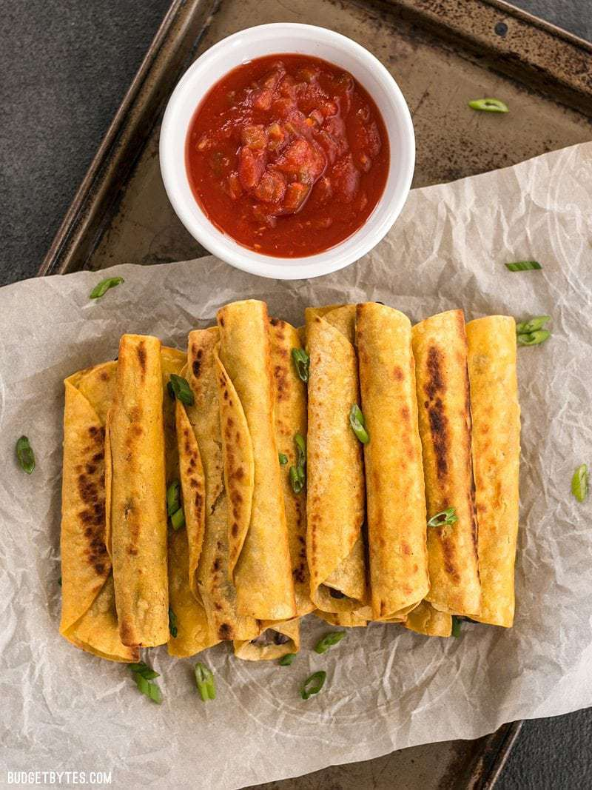

Taquitos
Black Bean Taquitos

Description
These cute and crispy little Creamy Black Bean Taquitos are really easy, fun to eat. Plus, they make a pretty impressive presentation, especially when provided with multiple sauces for dipping.
Ingredients
- 4 oz. cream cheese (room temperature)
- 1 15oz. can black beans
- 1 4oz. can diced green chiles
- 2 green onions
- 3 dashes hot sauce
- 1/8 tsp garlic powder
- 1/8 tsp salt
- 15 6-inch corn tortillas
- 3 Tbsp cooking oil, divided, for frying
Steps
- Rinse and drain the black beans. Drain the diced green chiles. Slice the green onions. Add the cream cheese, black beans, green chiles, green onion, hot sauce, garlic powder, and salt to a bowl. Stir together until evenly combined, then taste and adjust the salt or hot sauce to your liking.
- Stack 5 tortillas on a plate, cover with a damp paper towel, and microwave for about 20 seconds to soften (this helps prevent them from cracking when rolled). Heat a large non-stick or cast iron skillet over medium heat. Working quickly as the skillet heats, place about 2 Tbsp of the black bean filling in each tortilla then roll tightly closed.
- Once all five are filled, add about 1 Tbsp cooking oil to the skillet, give it a few seconds to heat (it should shimmer), then add the filled taquitos seam side down. Cook the taquitos on each side until brown and crispy, then transfer to a clean plate.
- Repeat the process in small batches of five, adding a little more oil to the skillet each time, until all the filling has been used (about 15 taquitos). Serve while still hot.
Back to Homepage